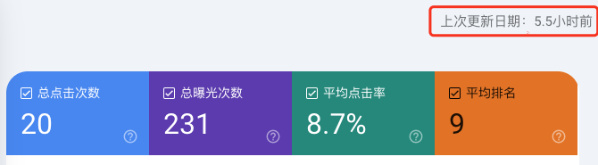
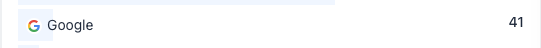
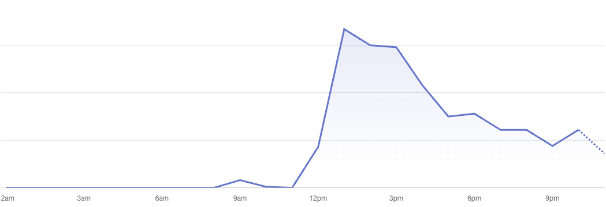

以下合并哥飞连续两天的两篇 SEO 教程。
【哥飞SEO教程】新站批量化上页面，必死
原文链接：https://mp.weixin.qq.com/s/X4lIBRE_tjjLNMhU1jfQdA
作者：哥飞｜发布时间：2025-03-20 23:47（Asia/Shanghai）
大家好，我是哥飞。
关于海量页面，其实哥飞公众号之前写过好多篇相关文章了。
新上线的网站，如何快速让谷歌收录？做网站为什么要生成几十万个页面？
用三个案例来详细解释大型网站的SEO引爆点为什么是生成几十万个页面给搜索引擎收录（上）
ChinaTravelDepot.com 2008年通过生成大量页面，三个月时间网站流量增长20倍
金山词霸 iciba.com 2008年通过生成页面，半年时间日IP从50万增长到100万
【哥飞小课堂】用几个案例来讲解程序化SEO生成海量页面获取流量的方式
如何用AI做SEO之内容自动批量生成，从搜索引擎获取免费流量
为什么之前哥飞跟大家说，用海量页面可以获取流量，但是今天这篇文章，却说必死呢？
请注意，哥飞在标题里加了个限定词“新站”。
所以，结论是“新站批量上页面必死 ”，而不是“网站批量上页面必死”。
这是很多新手都可能会犯的错误，所以哥飞特意写这篇文章来跟大家提个醒。
那么怎么定义新站呢？
看域名注册时间吗？看网站上线时间吗？
都不是。
不能看单一指标，要看综合指标。
首先，域名注册小于6个月，甚至小于12个月都算。
然后，网站上线时间小于6个月，甚至小于12个月都算。
再是，网站外链域名数量小于100个，DR小于40。
最后，网站被谷歌收录且拿到前20排名的页面数量小于100个。
以上这些条件，你的网站符合越多，那么就越接近哥飞定义的“新站”。
这样的新站，就不应该用程序化的方式，自动批量化发布新页面。
而什么样的站，适合批量上页面呢？
如果你的站，上面四个条件都不符合，那么可以试着开始做一做。
注意，是试着开始做，也就是慢慢来，先少量的上页面，而不是让你第一天就几百几千个页面。
并且需要注意，你上的每一个页面，都应该是围绕着某个关键词去做的，也就是一个关键词一个页面原则还得遵守。
在此基础上，你先做一些页面，在网站首页提供入口，在Sitemap也添加，让谷歌的爬虫能够爬到，然后你去GSC里观察，谷歌是否收录你的网页，是否出词，是否给你排名，是否给你曝光和点击。
如果你发布了10个页面，10个都被收录了，且都有点击进来，那就说明你页面模板和内容都调对了，就可以继续生成20个页面给谷歌抓取，之后继续观察，继续根据情况放量。
如果有比较多的页面没有被收录，或者收录了但没有排名和点击，那你就要去分析问题了，是选择的关键词竞争度太高？还是你做的内容质量不高？还是其他原因？
找出问题，解决问题，调整好内容生成方案后，再次生成10个页面去观察。
反复执行这样的操作，直到后面你调整出来的页面，绝大多数新页面都会被收录，就可以越做越多了。
然后你通过这些海量页面拿到的流量也会越来越多。
好了，文章写完了，大家晚安。
【哥飞SEO教程】新站不批量上页面，那要怎么做页面呢？从对SEO祛魅开始！
原文链接：https://mp.weixin.qq.com/s/F4Z3HmA25GJvUPeqUW3zXw
作者：哥飞｜发布时间：2025-03-21 23:45（Asia/Shanghai）
大家好，我是哥飞。
接着昨天的话题《 【哥飞SEO教程】新站批量化上页面，必死 》，既然新站批量上页面必死，那要怎么做页面呢？
其实昨天哥飞写的第四点已经说明了：
网站被谷歌收录且拿到前20排名的页面数量小于100个。
—《【哥飞SEO教程】新站批量化上页面，必死》
你需要手工一个一个做页面，做精品页面，争取做到上一个页面就被收录一个页面，并且被收录的页面都能拿到排名、曝光和点击。
就这样做他一两百个页面，然后保证拿到了前20排名的页面有100个。
当然，这是为后续你有足够的实力做批量页面做的准备，如果你压根就不想做批量上页面，那么你不一定需要做到100个。
另外，哥飞讲的这个方法，其实适合想做中大型网站的团队，个人开始者不一定要追求100这个数字。
下面进入正题， 要实现页面能够拿到排名、曝光和点击， 有两种办法。
第一种办法是只做竞争度特别低的词，这种方式对于外链的要求没有那么高，只要做的词本身竞争度足够低， 你网站随便搞一些外链， 都能有排名和曝光。
第二种办法是做有一定搜索量且有一定竞争度的词，这就需要你坚持搞外链，不断提升网站权重，并且持续不断的更新有一定质量的页面。
而第一种办法里，找竞争度特别低的词，又有两种选择，一种是特别快速的抓热点，抓新词，只要你上页面的速度够快，就能够不需要多少外链就拿到排名，有了排名就有曝光，然后就可能有点击。
举例，今天早上哥飞还没起床时，看到了一个关键词，然后立马拿来电脑注册了域名，花了几个小时上线了一个网站，现在已经有了从谷歌过来的数据了。

上面截图是5.5小时前的数据，实际到目前为止，谷歌来了41个点击。

如果按照同样的点击率估算，那就是今天总共拿到了460个左右的曝光。

另一种是找到一些参与竞争网页特别少的老词，方法之前哥飞已经写过了： 【哥飞SEO教程】使用KGR公式来量化新词，寻找蓝海词 。
其实新词和蓝海词，都有相同的特点，参与竞争的网页少，所以不需要多努力就能够拿到排名。
这，其实也是谷歌排名的真相。
一个关键词，我们能不能拿到排名，要看现在这个词的搜索结果里参与排名的网页多不多，强不强。
如果不多也不强，那么我们也不需要太强就能够拿到排名。
是的，你不需要跟全世界的所有网页竞争，你只需要跟这个关键词搜索结果的前几十个网页竞争。
所以搞SEO难吗？思考清楚之后，你会发现不难。
哥飞觉得，我们需要对SEO祛魅，SEO没有秘密，SEO不是魔法，SEO不需要黑科技，SEO需要的是踏踏实实做网页。
再说回上面的第二种方法， 做有一定搜索量且有一定竞争度的词， 其实方法也是一样的，踏踏实实做网页就好了。
为了能够从搜索引擎拿到免费的流量，我们需要做能够满足搜索用户需求的网页，然后同时需要考虑到，这个网页不仅仅给人看，其实也要给搜索引擎的爬虫看，于是你需要做一些基础的SEO工作。
是的，SEO就是这么简单，因为你的网页需要给搜索引擎的爬虫看，而不仅仅只给人用，所以你需要做一些 On-Page SEO 工作，这里边有很多细节，一不小心就会踩坑，所以需要有人教。
刚好，哥飞就愿意教。
那么具体要做哪些细节工作呢？